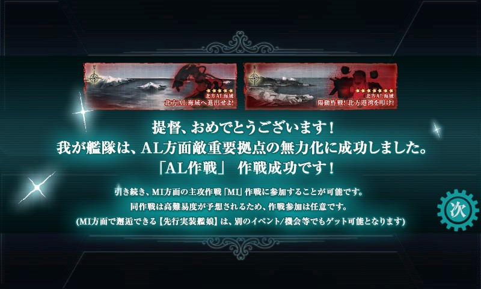

艦これ：E-2 陽動作戦！北方港湾を叩け！
公開日：
E-2 陽動作戦！北方港湾を叩け！

下ルートで行った。
1戦目

戦艦・軽空母が怖い。開幕で潰せればありがたいんだが……。
2戦目
やすらぎの間。ちょっとだけ楽。
でも、ここでかすり傷を負うとやっぱり辛い。
偵察装備がないと、次で進路を逸れる。
3戦目
潜水艦のみの編成アリ。潜水艦のエフェクトは出ない。複縦陣で臨むべきか。
戦艦・軽空母で事故が発生。
偵察装備がないと、次で進路を逸れる。
4戦目：BOSS
ちょっと火力不足……三式弾搭載の重巡が二隻とも無傷で到達していないとしんどい。
BOSS には雷撃が効かない。その代わり三式弾が有効。
経過
- 北方任務部隊A群（S）→ 戦艦戦隊（A）
- 重巡×4、軽巡×1の編成、誰か大破
- 北方任務部隊A群（S）
- 誰か大破
- 前衛警戒部隊（S）→ 高速打撃部隊（S）
- 上ルートでもいいのだけど、ここまで頑張ったんだし、大型艦は入れずに頑張りたい。下ルート目指して、駆逐×2、重巡×2、軽空×2 に編成替え
- 誰か大破
- 前衛警戒部隊（S）→ 高速打撃部隊（B）
- 誰か大破
- 前衛警戒部隊（S）
- 誰か大破
- めんどくさくて装備を変えていなかったのを、少し強化。「20.3cm 連装砲（2号）」などを導入。
- 前衛警戒部隊（A）→ 高速打撃部隊（A）→ AL防衛哨戒ライン（C）
- BOSS を外す。偵察を強化。「零式艦戦52型（熟練）」「天山十二型（友永隊）」「彗星（江草隊）」などを導入
- 前衛警戒部隊（S）→ 高速打撃部隊（A）→ AL防衛哨戒ライン（S）→ 北方方面主力艦隊（A）
- 決戦支援を付けようか
- 編成はだいぶ固まった。ここからが本番だ！
- ［決戦支援］前衛警戒部隊（S）→ 高速打撃部隊（A）→ AL防衛哨戒ライン（A）→ 北方方面主力艦隊（S）
- ここまで始末してくれるとだいぶありがたい。すでに中破・大破でててもかなり削れる。
- このパターンに持ち込めばイケる！
- 制空が足りないので艦戦を増やすことにする
- ［決戦支援］前衛警戒部隊（S）→ 高速打撃部隊（S）→ AL防衛哨戒ライン（S）
- 雪風大破
- ［決戦支援］前衛警戒部隊（A）→ 高速打撃部隊（S）→ AL防衛哨戒ライン（S）
- 雪風、龍驤大破、道中支援で事故が減らせないか試す
- ［道中支援］前衛警戒部隊（A）
- 支援はきたがスカぶり、初戦で龍驤大破。道中支援意味なかった。軽空母だけはキラ付けしようと思う
- ［決戦支援］前衛警戒部隊（A）
- 旗艦・島風大破。心折れそうになる。
- ［決戦支援］前衛警戒部隊（A）→ 高速打撃部隊（A）→ AL防衛哨戒ライン（B）→ 北方方面主力艦隊（A）

- 道中ですでにだいぶ傷ついていたので……
- ［決戦支援］前衛警戒部隊（S）→ 高速打撃部隊（A）
- 初戦で龍驤中破、隼鷹小破。次戦で雪風中破、摩耶大破。
- ［決戦支援］前衛警戒部隊（A）→ 高速打撃部隊（S）→ AL防衛哨戒ライン（D）→ 北方方面主力艦隊（S）
- 潜水艦のほうが被害少なくていいかも……敗北食らったけど。
- 割と理想的な展開で悠々撃破。
- ［決戦支援］前衛警戒部隊（A）→ 高速打撃部隊（S）→ AL防衛哨戒ライン（D）
- 龍驤、隼鷹大破、撤退。
- もう一度道中支援を試してみようかな？
- ［道中支援］前衛警戒部隊（A）→ 高速打撃部隊（A）→ AL防衛哨戒ライン（S）
- 旗艦・島風大破、撤退。支援こなかった(ノД`)・゜・。キラキラが取れてたかも
- ［道中支援］前衛警戒部隊（S）→ 高速打撃部隊（S）
- 懲りずにもう一回道中支援。
- 初戦で隼鷹、雪風が中破。暗雲が漂う。二戦目龍驤大破。支援がくる前に力尽きる。
- ［道中支援］前衛警戒部隊（S）→ 高速打撃部隊（S）→ AL防衛哨戒ライン（S）→ 北方方面主力艦隊（S）
- 懲りずにもう一回道中支援。
- 二戦目で支援発生。まぁ、多少は役に立ったかな……と思ったら三戦目もきた！ こりゃありがてぇ……。
- 余裕の撃破に加え「長波」ゲット。「長波牧場」を運営するか……
- しかし、20戦近くしてやっと半分かー。あと10戦もすれば終わるかな？
- ［道中支援］前衛警戒部隊（S）
- 初戦、支援艦隊が来援するも雪風大破。ダメなときはダメなのであきらめる……。
- ［道中支援］前衛警戒部隊（A）→ 高速打撃部隊（S）→ AL防衛哨戒ライン（A）
- 二戦目から支援、隼鷹中破。三戦目、雪風中破で突破。→＞BOSS を逸れる。＜なんでや ＞＜ ！ これ以上偵察のために戦力削れないので、装備は現状のまま続行。
- ［道中支援］前衛警戒部隊（S）→ 高速打撃部隊（S）→ AL防衛哨戒ライン（C）→ 北方方面主力艦隊（S）
- 初戦から支援アリ。二戦目支援ナシ。三戦目潜水艦、支援アリ（笑 → ほぼ無傷。
- ［道中支援］前衛警戒部隊（S）→ 高速打撃部隊（S）→ AL防衛哨戒ライン（D）
- 初戦、支援アリ。二戦目支援アリ。三戦目潜水艦、隼鷹大破。ぐぬぬ……キラキラ（二重）だったのに、まさか雷撃を二発も食らうとは。
- ［道中支援］前衛警戒部隊（S）→ 高速打撃部隊（A）→ AL防衛哨戒ライン（A）→ 北方方面主力艦隊（A）
- 初戦、二戦目、支援ナシ。三戦目、支援アリ。隼鷹、雪風、中破にて突破。
- BOSS 戦、開幕空爆で龍驤も中破。だいぶ戦力不足。
- 中途半端な削り方しちゃった……orz 瑞鳳がドロップ。
- ［道中支援］前衛警戒部隊（S）→ 高速打撃部隊（A）→ AL防衛哨戒ライン（A）
- 二戦目、支援くるも雪風中破。三戦目も支援、隼鷹中破、鳥海大破。撤退。
- ［道中支援］前衛警戒部隊（S）
- 隼鷹を烈風、烈風、彗星（江草隊）、零式艦戦21型（熟練）に。ちょっと対空が足りないかなと
- 初戦、雪風大破。SHOGANAI。
- ［道中支援、決戦支援］前衛警戒部隊（A）
- 決戦支援も出した！ ラストスパートだ！
- ……初戦、支援ナシ、鳥海大破、隼鷹中破。撤退。SHOGANAI。
- ［道中支援、決戦支援］前衛警戒部隊（S）→ 高速打撃部隊（S）→ AL防衛哨戒ライン（B）
- 初戦支援アリ。アリガタヤアリガタヤ。三戦目、潜水艦。支援もアリ（震え声 さいわい雷撃は回避。
- ＞BOSS を逸れる。＜なんでや ＞＜ ！ あれぇ……orz
- ［道中支援、決戦支援］前衛警戒部隊（A）→ 高速打撃部隊（A）→ AL防衛哨戒ライン（B）
- 初戦、ちょっとしょぼい支援。三戦目、潜水艦。雪風大破。強行突破を決意。
- ＞BOSS を逸れる。＜なんでや ＞＜ ！ 隼鷹の艦攻を外したのがまずかったか。（装備索敵-2）。戻す。
- ［道中支援、決戦支援］前衛警戒部隊（S）→ 高速打撃部隊（A）→ AL防衛哨戒ライン（B）
- 初戦、支援アリ。三戦目、潜水艦。
- メモリひとつ削りそこなってたと思ってたけど、大丈夫だったみたい。最終形態だった！
- 支援艦隊の来援もあり、昼戦で雑魚を一掃。イケる、こら、イケるでぇえええ！
- 鳥海さんの無慈悲な一撃。
クリア報酬
こんな時間にやるべきじゃなかった。
ダメコンと勲章もゲット。

ドロップ
| - | S | A | B |
| 前衛警戒部隊 | 摩耶、高雄、雷、初霜、初春、曙、龍驤、木曾、潮 | 初霜、電、若葉、 | |
| 高速打撃部隊 | 那智、雷、初霜、阿武隈、隼鷹、曙 | 響、初春、初霜、多摩 | |
| AL防衛哨戒ライン | 伊19、摩耶、木曾 | ||
| 北方方面主力艦隊 | 金剛、日向、長波、能代、弥生 | 電、瑞鳳 |
最終装備
島風：夜戦デコイ。電波係。
雪風：回避に期待したけど、かなりやられた。砲はつけてみたけど、あんまり役に立った気がしないので外しても。
ダメージソースその一。
ダメージソースその二。夜偵いれてみたおかげで、他の艦で索敵値を稼がなければいけなくなった。効果は……んー、なかったことはないっていう程度。
制空＋爆・雷撃。制空値を細かく計算したりせずに、何回か試した結果「これならまぁまぁかな」って感じの構成にしてある。
今回の被害担当艦。低速を混ぜたのがまずかったか……でも、軽空母だけは史実ベースで行きたかったんだ。
制空＋雷撃。少ないスロットに偵察機を二個入れてみたけど、索敵値ってスロット数ベースで計算されるの？ 艦載機の機数ベースで計算されるの？
索敵値：356（装備による索敵値：+55）
消費資源（遠征、解体による増分込み）
- 燃料：6000
- 弾薬：8000
- 鋼鉄：2000
- ボーキサイト：1500
所要時間、10時間（むろん、ずっと張り付いてたわけじゃないが）。
道中の支援艦隊を使わなかった前半と、25戦目から29戦目までのロスが痛かったなぁ。ミスがなく効率よくやれば、悪くても15戦程度でクリアできそう。反省、反省。
教訓
- 「うまくいっている編成をいじるときは慎重に」
- 支援艦隊、便利だった（小並感
- 二正面作戦だからって、ちょっと艦娘ケチり過ぎた。二軍ではちょっとキツい。